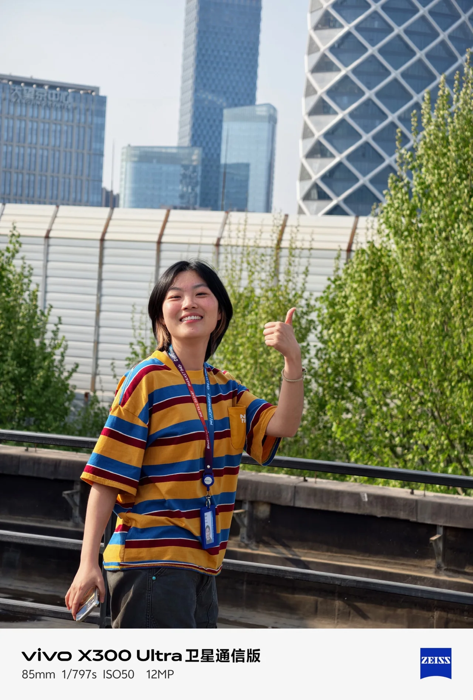

创意策划
把传播目标转化为可执行的创意
擅长品牌洞察与核心概念提炼，能把传播目标转化为清晰的创意方向、叙事结构，以及可落地的脚本方案与执行路径。

点击上方票券，查看详细经历
17340791180 · 1216659416@qq.com
品牌内容策划 / 创意编导
3年广告创意与内容策划经验01 / 个人优势
用户洞察 / 创意表达 / 内容落地
×把传播目标转化为可执行的创意
擅长品牌洞察与核心概念提炼，能把传播目标转化为清晰的创意方向、叙事结构，以及可落地的脚本方案与执行路径。
从想法到成片，完整推进
可独立完成创意、脚本、分镜、现场执导至成片交付，具备判断创意可执行性与传播潜力的能力。
理解平台，也理解观看的人
熟悉主流平台的传播规律与用户偏好，擅长内容广告、品牌短片与系列化视频创意，有内容栏目从零搭建与系列化运营经验。
拆解需求，表达方案，推动落地
具备客户对接与跨部门协作经验，能将客户抽象需求转化为清晰创意方案，准确拆解需求、清晰表达方案并推动落地。
02 / 工作经历
品牌内容 · 广告传播 · 创意制作
×品牌内容策划
社媒栏目：从零策划《探访100个北京公寓》，以“住进去后的生活”为切入点，设计 E 人／I 人双人出镜、猜价格与带粉丝看房等玩法；负责脚本、拍摄及剪辑推进、封面和发布文案，形成可延展的系列栏目。
品牌内容：围绕青年租住生活、城市归属感与租房痛点，策划公众号、小红书内容，落地“唯果观察”专栏；完成从选题、标题、正文到配图排版的制作。
热点创意：策划《看完早春晴朗，我和我的出租屋面面相觑》《北京的月亮很圆，你的那扇窗也要亮着》等选题，将影视话题、节日情绪与租住生活相连。
活动与媒体：参与 HICOOL 展会、写字楼推广及高校合作的传播主题和物料策划；承担 GEO 项目中大部分文章撰写，协同媒体发布，部分文章进入百度搜索结果及 AI 联网检索参考来源。
效果优化：根据用户预算、区域及通勤需求提炼房源卖点，结合点击、咨询与投放反馈，迭代标题、正文和封面，完成当月单客资成本下降50%的目标。
客户执行（AE）· 项目制
品牌传播：参与 vivo X300 系列演唱会联动传播，配合资深同事跟进客户沟通、方案修改及执行进度；梦龙项目中提出“勇气／勇敢做自己”的创意切入点，参与讨论与内容修改。
用户共创：参与 vivo X300“百天漂流瓶”演唱会共创计划的前期方案搭建，以手机接力串联观众影像与故事，结合影像任务、陌生人寄语和达人接力等玩法；前期工作完成后交接同事继续执行。
达人内容：负责 vivo X300 Ultra／X300s 小红书本竞品横测内容，确定对比角度与卖点表达，逐轮审核、修改达人稿件，整合客户反馈推进定稿。
项目协同：参与梦龙演唱会项目6位不同量级达人的传播执行，跟进选题、脚本和发布时间，检查产品与品牌表述，协同完成内容上线。
创意策划 / 视觉导演
创意与脚本：作为项目创意负责人与导演，围绕品牌诉求、传播目标及受众特点提出创意方向和故事结构，完成脚本、分镜与视觉参考；项目涵盖文旅、品牌广告、教育及新媒体短视频。
内容IP：独立孵化并运营职场内容IP「可砸show」，从账号定位、创意测试到内容制作及迭代，产出多条百万播放内容。
广告开发：参与“火星人集成灶”前期广告创意开发，累计产出200+创意点子与脚本雏形，覆盖品牌主张、产品卖点及多传播场景，为团队完善提案提供参考。
导演制作：组织现场拍摄，负责执导、多机位调度，跟进剪辑、调色与成片修改，把控叙事节奏、画面风格及品牌信息。
人物访谈：独立负责以非遗传承人等为对象的深度访谈项目，挖掘人物的社会脉络与内心世界，提升内容的情感厚度与叙事深度。
03 / 项目经历
品牌联动 / 视频栏目 / 个人IP
×品牌视频栏目 · 栏目策划 / 编导与出镜
策划切入：将“介绍一套房”转为“判断什么样的人适合住在这里”，以租客生活需求组织内容，把交通、配套等信息转化为有代入感的开篇问题。
创意设计：设计 E 人／I 人双人组合，以互动和不同观察视角串联看房，围绕通勤、预算和生活方式，结合猜价格、带粉丝看房等形式，形成统一框架下的差异化选题。
系列延展：围绕每期房源提炼核心看点，串联开篇钩子、内容结构及封面标题；内容同时用于品牌账号传播、销售带看及合作商家转发。
品牌联动传播 · 客户执行 / 创意协作
传播方向：围绕 vivo 影像能力、演唱会拍摄场景及乐迷情绪，将“记录舞台”延伸至“保存现场感受与生活力量”，参与建立品牌表达方向。
创意贡献：在前期方案多轮调整后，从主唱形象与音乐表达中提出“勇气／勇敢做自己”的方向，为团队内部讨论提供新切入点，并与客户后续反馈契合。
方案完善：配合资深同事跟进客户反馈，协同创意团队梳理主题、产品卖点及内容场景，从品牌关联、叙事逻辑和执行条件出发参与审核与修改。
内容落地：参与6位不同量级达人的沟通和执行，结合达人特点完善选题、脚本及品牌表述，跟进稿件确认与发布节点。
小红书创意横测种草 · 客户执行 / 达人内容策划与把控
用户视角：从使用习惯、体验感受与选购顾虑出发，将不同机型的比较融入生活场景，兼顾选购信息与用户共鸣。
表达把控：逐轮审核、修改达人稿件，调整标题、开篇钩子、场景、叙事节奏与对比逻辑，结合达人表达方式和客户反馈推进定稿及发布。
投放期间，本人负责5条内容的站外活跃率为41.2%，站外活跃成本为项目各内容类型最低；意向转化率18.16%，意向行为转化成本4.71元。
创始人 / 创意 / 导演
从零到一：以职场赛道为切口，围绕职场人群的日常困扰、情绪需求和共同经历挖掘选题，结合热点，将用户感受转化为有代入感、能引发讨论的脚本与情节。
独立闭环：账号定位、选题、脚本、执导、后期到数据复盘全部独立完成，跑通“创意策划—内容制作—传播验证—数据复盘—商业合作”的完整流程。
创意 / 导演
创意切入：针对文旅宣传内容雷同、缺乏年轻化表达的问题，从社交媒体语境出发，将地域文化与饮食特色转化为具有网感的视觉表达。
本人负责：创意方向、系列结构设计及政府侧对接，从提案、勘景到拍摄交付独立完成。
交付成果：把八道蒙餐拆成八支短片，形成系列化内容；作品被当地文旅采用为社交媒体端的主要宣传素材。
创意 / 导演
整体策划：为提升品牌辨识度与传播质感，主导完成3支品牌形象短片的整体创意策划与拍摄执行。
双线叙事：以“旅居体验”为核心，采用“理性功能”与“感性体验”的双线表达，呈现设施、区位优势及“如家般的温馨”格调。
04 / 专业技能与教育
品牌洞察 / 创意提案 / 内容策划
×创意发散、核心 idea 提炼、提案结构（洞察—策略—创意—执行）、脚本与分镜撰写、提案现场表达与追问应答。能将一页纸的想法展开为客户听得懂的方案，并应对比稿现场的方向调整。
小红书、抖音、视频号内容方法论；钩子设计、系列栏目搭建、选题库与内容日历、账号矩阵运营；熟悉平台推荐逻辑与内容审核边界，理解投流与自然流量内容的适用场景。
飞瓜数据、新榜及平台后台数据，包括完播、互动、涨粉与留资；点击率、转化率和转化成本的口径统一与归因；围绕项目定义观察指标、判断标准和归因方式。
现场执导与多机位调度、剪辑与调色沟通、演员与供应商统筹、成片质量把关；可独立带小团队完成外景拍摄，并结合预算调整制作方案。
戏剧影视文学 · 本科（双学位）
第二专业学位，系统学习编剧与影视叙事。
新闻学 · 本科
主修学位，新闻采访写作与传播学训练。
HELLO / 我是李明泽，也叫可砸
从用户的真实感受里找切口，把品牌想说的话，变成值得观看、阅读和参与的内容。
有想法，也能把想法带到现场 ↗

四种能力，四个可以继续打开的真实案例。
从预算、通勤与生活方式出发，为公寓栏目建立双人视角与系列选题。
看看栏目怎么搭起来 ↗02 / 品牌创意 × 场景表达在梦龙项目中提出“勇气／勇敢做自己”的创意切口，参与方案完善与达人内容落地。
打开品牌协作案例 ↗03 / 原创内容 × 传播验证独立完成个人IP的定位、脚本、执导、后期与复盘，让用户共鸣成为内容入口。
打开个人IP案例 ↗把创意拆成脚本、分镜与拍摄安排；在客户、创意和制作之间推进信息对齐与交付。
数字对应不同作品与项目，分别说明。
个人IP数据来自所提供的平台截图；梦龙数据为合作内容汇总，非去重触达人数。
THE PATH / 我的工作轨迹
品牌内容、广告协作与导演制作，组成我理解内容营销的不同视角。
品牌内容策划
栏目搭建策划《探访100个北京公寓》，用E人／I人双视角串联看房。
图文表达围绕青年租住生活，制作公众号、小红书选题与品牌内容。
内容优化结合点击、咨询和投放反馈，调整标题、正文与封面。
社媒栏目：从零策划《探访100个北京公寓》，以“住进去后的生活”为切入点，设计 E 人／I 人双人出镜、猜价格与带粉丝看房等玩法；负责脚本、拍摄及剪辑推进、封面和发布文案，形成可延展的系列栏目。
品牌内容：围绕青年租住生活、城市归属感与租房痛点，策划公众号、小红书内容，落地“唯果观察”专栏；完成从选题、标题、正文到配图排版的制作。
热点创意：策划《看完早春晴朗，我和我的出租屋面面相觑》《北京的月亮很圆，你的那扇窗也要亮着》等选题，将影视话题、节日情绪与租住生活相连。
活动与媒体：参与 HICOOL 展会、写字楼推广及高校合作的传播主题和物料策划；承担 GEO 项目中大部分文章撰写，协同媒体发布，部分文章进入百度搜索结果及 AI 联网检索参考来源。
效果优化：根据用户预算、区域及通勤需求提炼房源卖点，结合点击、咨询与投放反馈，迭代标题、正文和封面，完成当月单客资成本下降50%的目标。
客户执行（AE）· 项目制
创意协作参与vivo × 梦龙传播方案，提出“勇气／勇敢做自己”的方向。
达人内容跟进不同量级达人的选题、脚本、反馈与发布。
内容把控负责本竞品横测内容，推进稿件修改与品牌表述确认。
品牌传播：参与 vivo X300 系列演唱会联动传播，配合资深同事跟进客户沟通、方案修改及执行进度；梦龙项目中提出“勇气／勇敢做自己”的创意切入点，参与讨论与内容修改。
用户共创：参与 vivo X300“百天漂流瓶”演唱会共创计划的前期方案搭建，以手机接力串联观众影像与故事，结合影像任务、陌生人寄语和达人接力等玩法；前期工作完成后交接同事继续执行。
达人内容：负责 vivo X300 Ultra／X300s 小红书本竞品横测内容，确定对比角度与卖点表达，逐轮审核、修改达人稿件，整合客户反馈推进定稿。
项目协同：参与梦龙演唱会项目6位不同量级达人的传播执行，跟进选题、脚本和发布时间，检查产品与品牌表述，协同完成内容上线。
创意策划 / 视觉导演
创意与导演围绕品牌诉求，完成故事结构、脚本、分镜与现场执导。
系列内容推进文旅、美食与民宿等项目，建立系列化视觉与叙事。
原创实践孵化职场内容IP，独立完成内容策划、制作和复盘。
创意与脚本：作为项目创意负责人与导演，围绕品牌诉求、传播目标及受众特点提出创意方向和故事结构，完成脚本、分镜与视觉参考；项目涵盖文旅、品牌广告、教育及新媒体短视频。
内容IP：独立孵化并运营职场内容IP「可砸show」，从账号定位、创意测试到内容制作及迭代，产出多条百万播放内容。
广告开发：参与“火星人集成灶”前期广告创意开发，累计产出200+创意点子与脚本雏形，覆盖品牌主张、产品卖点及多传播场景，为团队完善提案提供参考。
导演制作：组织现场拍摄，负责执导、多机位调度，跟进剪辑、调色与成片修改，把控叙事节奏、画面风格及品牌信息。
人物访谈：独立负责以非遗传承人等为对象的深度访谈项目，挖掘人物的社会脉络与内心世界，提升内容的情感厚度与叙事深度。
SELECTED WORK / 点子落地现场
三个案例，分别回答品牌如何表达、栏目如何建立、内容如何被回应。
CASE 01 / 品牌联动传播
vivo × Imagine Dragons 梦龙演唱会
从乐迷与音乐的关系出发，找到“力量、勇气、做自己”的情绪切口。
将手机影像的记录能力，与“留住现场、延续感受”的使用价值相连。
结合达人风格完善选题、脚本与产品表述，跟进反馈、定稿和上线。
方案为0322团队提报节选，用于说明创意语境；其中的玩法与脚本属于提案内容，不等同于全部实际执行。我的个人贡献如上列明。
6个达人账号，跨抖音与小红书共7条内容。
| 平台 | 账号 | 阅读／曝光 | 点赞 | 评论 | 转发 | 收藏 |
|---|---|---|---|---|---|---|
| 抖音 | 幻想家姜时一 | 38.3万 | 31,000 | 137 | 810 | 660 |
| 抖音 | 梦章kikaku | 5.8万 | 1,400 | 15 | 30 | 29 |
| 小红书 | 梦章kikaku | 22.8万 | 3,400 | 71 | 43 | 1,513 |
| 小红书 | 小鲸瑜 | 4.1万 | 387 | 4 | 25 | 120 |
| 小红书 | 眠羊Fooy | 19.2万 | 964 | 20 | 28 | 377 |
| 小红书 | 小巴黎XIAOYU | 9.3万 | 944 | 25 | 46 | 89 |
| 小红书 | 你的咸咸 | 8.7万 | 1,188 | 23 | 40 | 178 |
| 合计 | 7条内容 | 108.2万 | 39,283 | 295 | 1,022 | 2,966 |
跨平台指标按原表汇总，不代表去重触达人数；统计时间以提供的表格为准。数据为合作内容整体表现，不表述为个人独立创造的成果。
CASE 02 / 品牌内容栏目
唯果租房 · 探访100个北京公寓
把预算、通勤、配套与生活方式，转成“什么样的人适合住这里”的选题。
E人看感觉、I人看门道，用互动与不同观察视角降低信息的生硬感。
围绕每期房源提炼开篇钩子、核心看点与封面标题，再以猜价格、带粉丝看房延展。
一边提供代入感，一边帮助用户做判断。
同一品牌，在栏目、热点与长文中保持对年轻租客的关注。
借热点的造词语境，以“先让第一版存在”连接品牌创业故事，再用“唯来／未来”收束记忆点。
“第一版的意义，是让第二版有机会出现。”
从季节变化切入，把“家”的叙事延伸到出租屋里的成长、松弛与安顿。
“房子可以是租来的，但对生活的热爱，不应该是暂时的。”
从租客对空间、边界与稳定的需要出发，讨论居住处境，落到减少找房不确定性的服务价值。
“租房不只是找到一间房。”
以上摘自所提供的公众号文章稿件，展示选题、文案与品牌连接方法；未提供发布效果的数据不作传播成果展示。
SOCIAL COPY / 热点表达
以理想生活与真实处境的对照，组织标题、场景和品牌落点。图文与视频共同丰富品牌的内容表达。
CASE 03 / 个人原创内容IP
个人IP「可砸show」 · 职场内容实践
从求职、面试、学历与办公室关系中，挖掘用户熟悉的冲突与情绪。
通过角色关系、对话与反转组织脚本，让观点通过故事被看见。
结合播放、点赞、评论与分享观察内容反馈，持续调整选题和表达。
小红书与抖音数据来自不同作品，分别列示；均为所提供截图时的表现，不相加为去重人数。
CONTENT / RESPONSE
《不服！》后台同时显示8,994点赞、4,547评论和5,981分享。这些反馈帮助我观察：哪些职场议题让用户愿意表达自己的经历。
截图中未形成有效口径的完播率等字段，不用于效果结论。
作为补充作品，展示视觉叙事与制作经验。
文旅与民宿项目中担任创意／导演，围绕地域特色、旅居体验组织故事与视觉表达。
品牌视频栏目 · 栏目策划 / 编导与出镜
策划切入：将“介绍一套房”转为“判断什么样的人适合住在这里”，以租客生活需求组织内容，把交通、配套等信息转化为有代入感的开篇问题。
创意设计：设计 E 人／I 人双人组合，以互动和不同观察视角串联看房，围绕通勤、预算和生活方式，结合猜价格、带粉丝看房等形式，形成统一框架下的差异化选题。
系列延展：围绕每期房源提炼核心看点，串联开篇钩子、内容结构及封面标题；内容同时用于品牌账号传播、销售带看及合作商家转发。
品牌联动传播 · 客户执行 / 创意协作
传播方向：围绕 vivo 影像能力、演唱会拍摄场景及乐迷情绪，将“记录舞台”延伸至“保存现场感受与生活力量”，参与建立品牌表达方向。
创意贡献：在前期方案多轮调整后，从主唱形象与音乐表达中提出“勇气／勇敢做自己”的方向，为团队内部讨论提供新切入点，并与客户后续反馈契合。
方案完善：配合资深同事跟进客户反馈，协同创意团队梳理主题、产品卖点及内容场景，从品牌关联、叙事逻辑和执行条件出发参与审核与修改。
内容落地：参与6位不同量级达人的沟通和执行，结合达人特点完善选题、脚本及品牌表述，跟进稿件确认与发布节点。
小红书创意横测种草 · 客户执行 / 达人内容策划与把控
用户视角：从使用习惯、体验感受与选购顾虑出发，将不同机型的比较融入生活场景，兼顾选购信息与用户共鸣。
表达把控：逐轮审核、修改达人稿件，调整标题、开篇钩子、场景、叙事节奏与对比逻辑，结合达人表达方式和客户反馈推进定稿及发布。
投放期间，本人负责5条内容的站外活跃率为41.2%，站外活跃成本为项目各内容类型最低；意向转化率18.16%，意向行为转化成本4.71元。
创始人 / 创意 / 导演
从零到一：以职场赛道为切口，围绕职场人群的日常困扰、情绪需求和共同经历挖掘选题，结合热点，将用户感受转化为有代入感、能引发讨论的脚本与情节。
独立闭环：账号定位、选题、脚本、执导、后期到数据复盘全部独立完成，跑通“创意策划—内容制作—传播验证—数据复盘—商业合作”的完整流程。
创意 / 导演
创意切入：针对文旅宣传内容雷同、缺乏年轻化表达的问题，从社交媒体语境出发，将地域文化与饮食特色转化为具有网感的视觉表达。
本人负责：创意方向、系列结构设计及政府侧对接，从提案、勘景到拍摄交付独立完成。
交付成果：把八道蒙餐拆成八支短片，形成系列化内容；作品被当地文旅采用为社交媒体端的主要宣传素材。
创意 / 导演
整体策划：为提升品牌辨识度与传播质感，主导完成3支品牌形象短片的整体创意策划与拍摄执行。
双线叙事：以“旅居体验”为核心，采用“理性功能”与“感性体验”的双线表达，呈现设施、区位优势及“如家般的温馨”格调。
MY TOOLKIT / 我的开工装备
点击每张能力卡，看看我的工作方法和对应的项目依据。
新闻学的观察，影视叙事的结构。
戏剧影视文学 · 本科（双学位）
第二专业学位，系统学习编剧与影视叙事。新闻学 · 本科
主修学位，新闻采访写作与传播学训练。OFF DUTY / 生活里的观察
城市、光线、餐桌和人与人的对话，都是观察生活的入口。